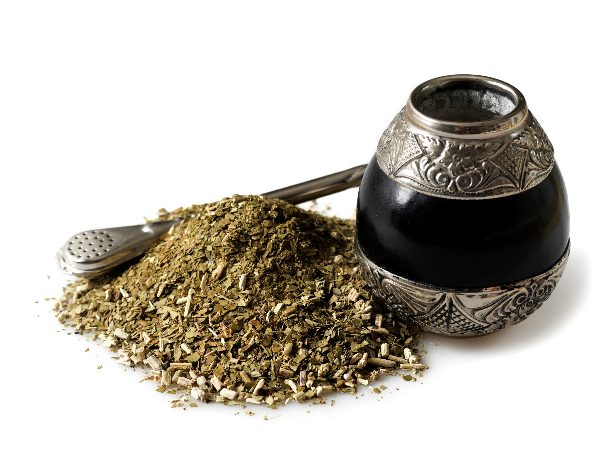

El Mate En el marco del Día Nacional del Mate, todos los 30 de noviembre, hacemos un recorrido por la historia de la infusión que nos define y te contamos sus secretos y sus leyendas La yerba mate, cuyo nombre científico es Ilex Paraguariensis es un árbol nativo de la Selva Paranaense, que en estado silvestre puede alcanzar una altura de entre 12 y 16 metros. Para facilitar su cosecha, las plantas son podadas hasta dos veces al año a una altura promedio de 2 metros. En la Argentina, llamamos mate a la infusión que se prepara con sus hojas, como también al recipiente donde se la toma, siendo el más utilizado el de calabaza.  Parte de nuestra historia Su origen se remonta a los pueblos guaraníes, que utilizaban las hojas del árbol como bebida, objeto de culto y moneda de cambio. Durante las largas travesías por la selva, los conquistadores españoles notaron que los guaraníes tenían mayor resistencia luego de tomar esta bebida sagrada. Más tarde los jesuitas introdujeron el cultivo en las reducciones y contribuyeron a su difusión y comercialización, al punto tal de que la infusión se hizo conocida entonces como té de los jesuitas. Producción El cultivo se localiza en Misiones y nordeste de Corrientes. En 2019 la producción de yerba mate molida y envasada para el mercado interno fue de casi 277.332.014 millones de kg. Nuestro país es hoy el principal productor y exportador mundial de yerba mate. Consumo Según datos del Instituto Nacional de la Yerba Mate (INYM), en la Argentina se consume un promedio 6,4 kg por habitante por año y la yerba mate está presente en más del 90% de los hogares. Su consumo es altamente beneficioso para la salud, ya que contiene vitaminas del grupo B, posee un gran poder antioxidante, produce un efecto energizante y ayuda a reducir el colesterol malo (LDL) y los triglicéridos. La cultura del mate Un texto de la Cancillería Argentina da cuenta de la profunda simbología que conlleva compartir la infusión: Es el compañerismo hecho momento. Es la modestia de quien ceba el mejor mate. Es la generosidad de dar hasta el final. Es la hospitalidad de la invitación. Es la justicia de uno por uno. Es la obligación de decir “gracias”, al menos una vez al día. Es la actitud ética, franca y leal de encontrarse, sin mayores pretensiones que compartir.